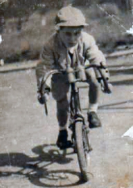

La vita
Dall’Isola di Milano al Vigorelli — il racconto di un sogno cominciato in fasce.

Con la macchina del tempo voliamo fino al 30 Agosto 1937 nel quartiere Isola di Milano, dove sono nato. Papà Pasquale era un grande appassionato di ciclismo, un tifoso come tanti che non poté nemmeno pensare di diventare praticante, viste le difficoltà economiche. A quei tempi era un lusso persino possedere una bicicletta…
Credo di essere stato il più giovane frequentatore di velodromi del mondo: papà mi ci portava che ero ancora in fasce. Lui oggi, purtroppo, non è qui con me a ricordare tutte le gare viste insieme al Vigorelli, vissuto in ogni angolo sia prima che dopo l’avvento della guerra. Ogni volta che vedevo le gare di mezzofondo mi appoggiavo alla balaustra della curva d’arrivo e iniziavo ad urlare a squarciagola. Quello divenne il mio posto fisso per molto tempo: mia madre Emma rimproverava il povero babbo perché tornavo a casa sempre senza voce, io invece ero talmente eccitato che non sentivo nulla e continuavo a sognare ad occhi aperti. Sognavo di essere già adulto e di poterci essere io a pedalare dietro a quelle moto che mi inebriavano…
A due anni avevo già una bicicletta con il manubrio da corsa, perché tutto quello che mio padre non aveva potuto avere da ragazzo lo ha voluto dare a me, facendo grossi sacrifici. A quindici anni, iniziai a correre, su strada ma soprattutto su pista, anche se il regolamento dell’Unione Velocipedistica Italiana mi impediva di correre dietro motori fino al compimento del diciottesimo anno di età. Erano i diciotto anni che non arrivavano mai e facevano sembrare sempre più lontana la realizzazione del mio sogno. La mia realtà era quella di un ragazzo che si allenava su strada: ogni moto, ogni camion erano il pretesto per una nuova sfida, li rincorrevo tutti!
Nel rione di Milano in cui sono nato e cresciuto, tanti miei amici scorazzavano su moto di ogni tipo: Rumi, Cucciolo, Motom, Vespa e Lambretta. Tra questi c’era anche Alberto Milani, un grande del motociclismo e tante volte è capitato che, lui in moto e io in bici, si precorressero dei tratti insieme (dietro motori, naturalmente). Capitava talvolta che i miei amici mi deridessero perché pretendevo di star loro dietro, ma quello per me era l’unico modo di continuare a credere nel mio grande sogno.
Fu così che, dopo aver raggiunto la maggiore età, negli anni a seguire ottenni grandi soddisfazioni da questo sport, prima come ciclista e poi come allenatore.
Ora che questo sport sembra aver perso il fascino e l’attrazione di una volta mi restano solo i ricordi per rivivere le forti emozioni di un tempo… sensazioni che, devo ammetterlo, ancora oggi mi danno qualche brivido.